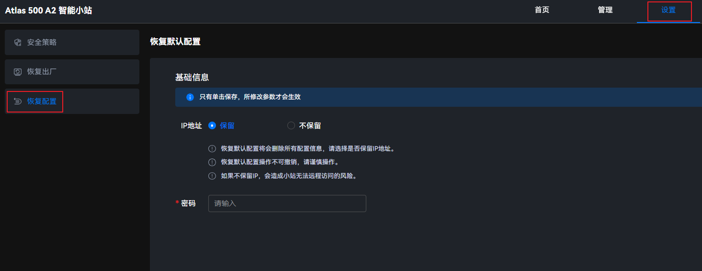

使用场景
设备运行过程中，当系统配置等信息发生损坏时，可以使用恢复默认配置功能，使设备恢复默认配置。Atlas IES同时还支持最小系统恢复，最小系统恢复的相关说明和操作请参见《FusionDirector 操作指南》。

- 恢复默认配置操作不可撤销，请谨慎操作。
- 恢复默认配置将会删除所有配置信息，请选择是否保留IP地址。如果不保留IP，可能存在无法远程访问Atlas 500 A2 智能小站的风险。
- 恢复默认配置：Web密码、Web超时时间、密码有效天数、证书过期告警天数、NTP使能、告警屏蔽配置、NFS管理、登录规则、挂载白名单（磁盘分区未挂载）、网管模式、加密算法配置、容器相关配置（已开启容器应用管理对接能力项）、web通信证书、网络IP（选择不保留）。
- 保留配置：网络IP（选择保留）、白牌配置、主机名、系统资产标签、系统时间、系统时区地区、系统弱口令、磁盘分区、挂载白名单（磁盘分区已挂载）。
- 恢复容器相关配置后，恢复前已部署的容器将会被删除。
操作步骤
- 在主菜单中选择。
进入“基础信息”操作页面。
图1 恢复默认配置
 - 选择是否保留网络IP地址进行下一次登录。
- 是，在“IP地址”处单击“保留”。
- 否，在“IP地址”处单击“不保留”。

推荐用户选择保留当前登录系统的IP地址。若选择保留的IP地址与默认网关不在同一网段，恢复默认配置后，会出现保留的IP地址无法远程登录系统的风险。
不保留网络IP地址，网络IP地址将恢复为系统默认IP地址，可能无法远程访问设备。
- 在“密码”文本框中输入当前管理员用户密码。
- 单击“保存”。
界面弹出提示对话框，选择“确认”。
恢复默认配置过程，大约等待2分钟左右。恢复默认配置成功后，将自动刷新界面返回至系统登录页面。